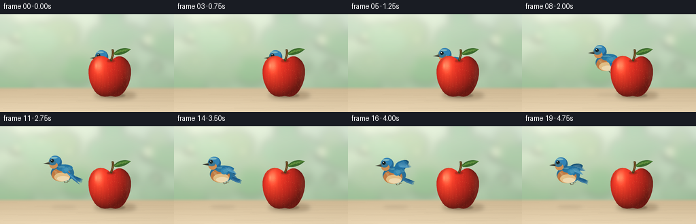
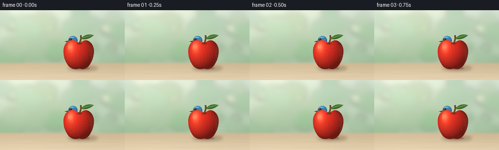

CODING AGENTS AS PIXEL WORLD MODELS
traex/GPT-6.1-Sol · dynamic_spatial_relationship_0037
点击播放 · 原生 RGB 像素
逐轮保存的候选
回放视频、检查图与代码变化。
每份候选均可单独播放。实际图片检查记录在下方工具轨迹中。
候选 01播放与检查图
点击播放 · 原生 RGB 像素


展开代码变化
--- 上一保存版本
+++ 本次保存版本
@@ -0,0 +1,232 @@
+"""Procedurally illustrated RGB video. No external assets or rendering engines."""
+from pathlib import Path
+import math
+import numpy as np
+from PIL import Image, ImageDraw, ImageFilter
+import artifact_io
+
+ROOT = Path(__file__).resolve().parent
+S = 4
+W,H = 256*S,144*S
+rng = np.random.default_rng(37)
+
+def xy(p): return tuple(float(q)*S for q in p)
+def bezier(points, steps=20):
+ p=np.asarray(points,dtype=float)
+ if len(p)==4:
+ t=np.linspace(0,1,steps)[:,None]
+ return (1-t)**3*p[0]+3*(1-t)**2*t*p[1]+3*(1-t)*t*t*p[2]+t**3*p[3]
+ return p
+
+def path(start, segments):
+ out=[start]
+ p=start
+ for a,b,c in segments:
+ out.extend(bezier([p,a,b,c])[1:].tolist()); p=c
+ return out
+
+def polygon(img,pts,fill):
+ ImageDraw.Draw(img).polygon([xy(p) for p in pts],fill=fill)
+
+def line(img,pts,fill,width=1):
+ ImageDraw.Draw(img).line([xy(p) for p in pts],fill=fill,width=max(1,round(width*S)),joint='curve')
+
+def ellipse(img,bounds,fill): ImageDraw.Draw(img).ellipse(xy(bounds),fill=fill)
+
+def soft_ellipse(img,bounds,fill,blur):
+ z=Image.new('RGBA',(W,H)); ellipse(z,bounds,fill)
+ img.alpha_composite(z.filter(ImageFilter.GaussianBlur(blur*S)))
+
+# An out-of-focus garden and a warm, simple wooden tabletop.
+yy,xx=np.mgrid[0:H,0:W]/S
+v=np.clip(yy/144,0,1)
+bg=np.zeros((H,W,3),float)
+for k,(a,b) in enumerate(zip((213,228,210),(157,188,151))): bg[:,:,k]=a*(1-v)+b*v
+sun=np.exp(-((xx-52)/120)**2-((yy-17)/65)**2)
+bg+=sun[:,:,None]*np.array([27,21,17])
+background=Image.fromarray(np.clip(bg,0,255).astype('uint8')).convert('RGBA')
+foliage=Image.new('RGBA',(W,H))
+for i in range(34):
+ x=rng.uniform(-20,280); y=rng.uniform(5,114); r=rng.uniform(9,32)
+ col=(int(rng.uniform(75,120)),int(rng.uniform(126,162)),int(rng.uniform(73,113)),int(rng.uniform(20,65)))
+ ellipse(foliage,(x-r,y-r*.8,x+r,y+r*.8),col)
+for x,y,r in [(24,33,8),(60,22,6),(102,38,6),(217,38,11),(230,77,7),(94,73,4),(32,69,6)]:
+ ellipse(foliage,(x-r,y-r,x+r,y+r),(255,251,218,100))
+background.alpha_composite(foliage.filter(ImageFilter.GaussianBlur(6*S)))
+# Ground plane, gently receding; no horizon line behind the subjects.
+table=np.zeros((H,W,4),np.uint8)
+t=np.clip((yy-109)/35,0,1)
+woodlight=7*np.exp(-((xx-61)/140)**2)
+noise=rng.normal(0,.55,(H,W))
+for k,(a,b) in enumerate(zip((204,182,146),(227,207,173))):
+ table[:,:,k]=np.clip(a*(1-t)+b*t+woodlight+noise,0,255)
+table[:,:,3]=np.uint8(np.clip((yy-106)/5,0,1)*255)
+background.alpha_composite(Image.fromarray(table))
+grain=Image.new('RGBA',(W,H))
+for i in range(32):
+ y=rng.uniform(112,145); x=rng.uniform(-50,180); length=rng.uniform(45,160)
+ pts=bezier([(x,y),(x+length*.3,y-.4),(x+length*.7,y+.6),(x+length,y+.1)],40)
+ line(grain,pts,(117,81,48,int(rng.uniform(10,25))),rng.uniform(.12,.32))
+background.alpha_composite(grain.filter(ImageFilter.GaussianBlur(.18*S)))
+soft_ellipse(background,(139,114,200,125),(98,69,38,77),3)
+soft_ellipse(background,(147,117,184,122),(74,49,32,100),1.25)
+
+# The apple is a fixed foreground object. Its silhouette is also the true
+# occlusion mask for the bird at the start and during its departure.
+apple_shape=path((163,69),[
+ ((153,57),(138,60),(133,72)),
+ ((128,82),(130,99),(138,111)),
+ ((144,121),(153,123),(163,120)),
+ ((176,125),(184,115),(189,103)),
+ ((194,90),(195,74),(185,66)),
+ ((177,59),(170,62),(163,69))])
+mask=Image.new('L',(W,H)); polygon(mask,apple_shape,255)
+# Rounded shading, specular reflection, delicate red/gold skin flecks.
+nx=(xx-162)/32; ny=(yy-91)/33
+rr=nx*nx+ny*ny
+nz=np.sqrt(np.clip(1-rr,0,1))
+light=np.clip(-.49*nx-.49*ny+.72*nz,0,1)
+shade=.40+.64*light
+red=np.empty((H,W,3),float)
+red[:,:,0]=216*shade+19
+red[:,:,1]=38*shade+10
+red[:,:,2]=29*shade+7
+# Soft warm skin and a narrow cool reflected edge.
+red+=np.exp(-((xx-146)/12)**2-((yy-77)/24)**2)[:,:,None]*np.array([16,23,8])
+red+=np.exp(-((xx-189)/4)**2-((yy-89)/25)**2)[:,:,None]*np.array([17,15,12])
+stripes=(np.sin(xx*.93+np.sin(yy*.11)*1.7)+np.sin(xx*1.54+yy*.08))*.5
+red+=stripes[:,:,None]*np.array([3.5,1.2,.6])
+texture=rng.normal(0,1,(H,W))
+red+=texture[:,:,None]*np.array([1.5,.8,.6])
+specular=np.exp(-((xx-145)/5.7)**2-((yy-75)/9)**2)
+red+=specular[:,:,None]*np.array([38,64,51])
+red+=np.exp(-((xx-141)/1.6)**2-((yy-76)/4.3)**2)[:,:,None]*np.array([21,39,31])
+apple=Image.fromarray(np.clip(red,0,255).astype('uint8')).convert('RGBA'); apple.putalpha(mask)
+# Fine lenticels follow the fruit, not the background.
+detail=Image.new('RGBA',(W,H))
+for i in range(260):
+ x=rng.uniform(133,191); y=rng.uniform(64,120)
+ if mask.getpixel((int(x*S),int(y*S))) and ((x-163)/29)**2+((y-91)/29)**2<.92:
+ r=rng.uniform(.11,.24)
+ ellipse(detail,(x-r,y-r,x+r,y+r),(255,201,105,int(rng.uniform(25,75))))
+apple.alpha_composite(detail)
+# Top dimple and the bent stem.
+soft_ellipse(apple,(157.6,66.8,169.1,70.7),(79,26,15,94),.75)
+stem=path((161.9,68.6),[
+ ((162.6,64.3),(166.1,59.6),(164.1,52.1)),
+ ((165.2,51.4),(167.1,51.5),(167.3,52.5)),
+ ((169.1,59.4),(165.7,65.2),(165.0,69.0)),
+ ((164.0,69.8),(162.8,69.4),(161.9,68.6))])
+polygon(apple,stem,(83,56,26,255))
+line(apple,bezier([(164,67),(165,63),(167,58),(165.7,53)]),(150,108,54,255),.65)
+leaf=path((166.5,59),[
+ ((174,48.3),(184.6,49.3),(192.7,51.4)),
+ ((186.2,57.4),(176.2,62.2),(166.5,59))])
+polygon(apple,leaf,(57,105,43,255))
+leaf2=path((168,58.1),[((176,52),(184,50.9),(192.7,51.4)),((184,53.1),(176,56.6),(168,58.1))])
+polygon(apple,leaf2,(85,139,57,255))
+line(apple,[(166.4,59),(176,55.6),(191.2,51.8)],(137,163,73,255),.55)
+for j in range(4):
+ x=172+j*4
+ line(apple,[(x,57.4-j*.8),(x+1.5,52.8-j*.3)],(123,153,71,180),.28)
+
+# Bird geometry uses a side-on left-facing silhouette and separately articulated
+# flight feathers. Coordinates are local to its body centre.
+def feather(img,root,tip,width,color):
+ r=np.array(root,float); q=np.array(tip,float); d=q-r
+ n=np.array([-d[1],d[0]])/(np.linalg.norm(d)+1e-5)
+ pts=path(tuple(r),[(tuple(r+d*.28+n*width),tuple(r+d*.75+n*width*.6),tuple(q)),
+ (tuple(r+d*.77-n*width*.35),tuple(r+d*.32-n*width*.6),tuple(r))])
+ polygon(img,pts,color)
+ return pts
+
+def bird(cx,cy,phase,flight):
+ im=Image.new('RGBA',(W,H))
+ def pt(p): return (cx+p[0],cy+p[1])
+ def ell(box,col): ellipse(im,(cx+box[0],cy+box[1],cx+box[2],cy+box[3]),col)
+ def ln(points,col,width=.5): line(im,[pt(p) for p in points],col,width)
+ def poly(points,col): polygon(im,[pt(p) for p in points],col)
+ def wing(far=False):
+ amp=math.sin(phase+(0.35 if far else 0))
+ if flight<.05: amp=-.1
+ length=(20+9*flight)*(0.72 if far else 1)
+ # Flapping extends the wing alternately above and below the body.
+ tip=np.array([20.0 if far else 17.0,-length*amp-4])
+ root=np.array([1.0,-6.0])
+ joint=root+(tip-root)*.52+np.array([-4.5,-2])
+ basecol=(25,83,118,255) if far else (34,111,157,255)
+ contour=path(pt(tuple(root)),[(pt(tuple(joint+[-7,-3])),pt(tuple(tip+[-5,-4])),pt(tuple(tip))),
+ (pt(tuple(tip+[5,2])),pt(tuple(joint+[8,7])),pt(tuple(root+[7,8]))),
+ (pt(tuple(root+[4,4])),pt(tuple(root)),pt(tuple(root)))])
+ polygon(im,contour,basecol)
+ for j in range(7):
+ q=tip+np.array([j*1.20-2.0,j*1.48])
+ r=joint+np.array([j*.56-1.5,j*.5])
+ col=(29+j*3,88+j*4,129+j*5,255) if far else (34+j*4,110+j*5,161+j*5,255)
+ feather(im,pt(r),pt(q),1.9,col)
+ line(im,[pt(r+(q-r)*.18),pt(r+(q-r)*.91)],(94,171,209,100),.35)
+ if not far:
+ ell((-1,-8,9,1),(50,134,178,255))
+ for j in range(4):
+ ln([(2+j*.8,-5+j),(7+j,-7+j),(11+j,-8+j)],(99,177,206,170),.55)
+ # Far wing and layered, pointed tail behind the body.
+ wing(True)
+ for j in range(4):
+ feather(im,pt((10,3+j*.8)),pt((30-j*.4,10+j*1.5)),2.3,(26+j*5,89+j*5,132+j*7,255))
+ ln([(15,6+j*.7),(28,10+j*1.5)],(96,160,189,170),.45)
+ # Tiny legs fold into the belly in flight; initially hidden by the apple.
+ if flight>.1:
+ ln([(1,11),(4,15),(8,14)],(89,71,53,255),.8)
+ ln([(5,10),(8,13),(11,12)],(100,75,50,255),.65)
+ # Body silhouette, upper blue back, copper breast, ivory belly.
+ ell((-17,-12,17,13),(41,110,149,255))
+ ell((-16,-7,12,13),(193,121,65,255))
+ ell((-12,0,11,13),(226,188,131,255))
+ ell((-8,5,10,12.5),(236,215,175,255))
+ ell((-9,-12,15,-2),(39,119,162,255))
+ # Slightly elongate neck and round head.
+ ell((-20,-25,-1,-6),(35,102,145,255))
+ ell((-19,-25,-3,-11),(50,131,181,255))
+ ell((-19,-16,-7,-6),(209,142,81,255))
+ ell((-20,-18,-9,-11),(58,119,148,255))
+ ell((-17.6,-23.4,-7.2,-20.8),(77,157,198,140))
+ # Feather groups on breast and nape create texture, never random per frame.
+ for j in range(7):
+ ln([(-13+j*.7,-4+j*1.35),(-10+j*.85,-2+j*1.3),(-8+j*.7,-2+j*1.3)],(248,208,149,110),.35)
+ for j in range(6):
+ ln([(-9+j*2,-10),(-6+j*2,-8.1),(-4+j*2,-8.3)],(79,159,194,160),.38)
+ # Beak points left. Its shape stays stable through the motion.
+ poly([(-19,-16),(-28,-13.4),(-19,-12)],(50,48,42,255))
+ poly([(-19,-16),(-28,-13.4),(-19,-14.1)],(101,99,77,255))
+ ln([(-27,-13.4),(-20,-13.7)],(25,40,43,255),.4)
+ ell((-18.1,-20.5,-12.2,-14.5),(70,115,137,255))
+ ell((-17.6,-20,-12.6,-15),(20,32,34,255))
+ ell((-16.5,-19.2,-15.1,-17.8),(250,252,241,255))
+ ell((-14.1,-16.7,-13.6,-16.2),(151,183,179,255))
+ # Near wing above body: a folded blue shoulder becomes an extended wing.
+ wing(False)
+ return im
+
+frames=[]
+for i in range(20):
+ if i<=3:
+ u=0; flight=0
+ else:
+ u=min(1,(i-3)/12)
+ flight=min(1,(i-3)/2)
+ # Smooth, monotonic lateral flight. At the end it remains visibly to the left.
+ ease=u*u*(3-2*u)
+ cx=160-92*ease
+ cy=78-7*ease-5*math.sin(math.pi*u)
+ if i>=15: cy+=.75*math.sin((i-15)*1.5)
+ phase=2*math.pi*(i-3)*.31+.4
+ scene=background.copy()
+ if flight>.05:
+ # A diffuse, diminishing flight shadow is visible on the table.
+ soft_ellipse(scene,(cx-16,117,cx+21,121),(88,69,45,round(18+10*ease)),2.5)
+ scene.alpha_composite(bird(cx,cy,phase,flight))
+ scene.alpha_composite(apple)
+ rgb=scene.convert('RGB').resize((256,144),Image.Resampling.LANCZOS)
+ frames.append(np.asarray(rgb,dtype=np.uint8))
+artifact_io.save(np.stack(frames),ROOT)
+print('Saved 20 RGB frames, 256x144, 4 fps to',ROOT)
可观测工具轨迹
实际执行的命令与返回图片。
命令 1exit 0
/bin/bash -lc "ls -la && cat prompt.txt && printf '\\n--- RULES ---\\n' && cat GENERATION_RULES.md && printf '\\n--- SPEC ---\\n' && cat task_spec.json"
命令 2exit 0
/bin/bash -lc 'cat artifact_io.py && cat player_template.html'
命令 3exit 0
/bin/bash -lc "python - <<'PY'
import PIL, numpy
print('PIL',PIL.__version__)
PY"命令 4exit 0
/bin/bash -lc "cat > generate.py <<'PY'
\"\"\"Procedurally illustrated RGB video. No external assets or rendering engines.\"\"\"
from pathlib import Path
import math
import numpy as np
from PIL import Image, ImageDraw, ImageFilter
import artifact_io
ROOT = Path(__file__).resolve().parent
S = 4
W,H = 256*S,144*S
rng = np.random.default_rng(37)
def xy(p): return tuple(float(q)*S for q in p)
def bezier(points, steps=20):
p=np.asarray(points,dtype=float)
if len(p)==4:
t=np.linspace(0,1,steps)[:,None]
return (1-t)**3*p[0]+3*(1-t)**2*t*p[1]+3*(1-t)*t*t*p[2]+t**3*p[3]
return p
def path(start, segments):
out=[start]
p=start
for a,b,c in segments:
out.extend(bezier([p,a,b,c])[1:].tolist()); p=c
return out
def polygon(img,pts,fill):
ImageDraw.Draw(img).polygon([xy(p) for p in pts],fill=fill)
def line(img,pts,fill,width=1):
ImageDraw.Draw(img).line([xy(p) for p in pts],fill=fill,width=max(1,round(width*S)),joint='curve')
def ellipse(img,bounds,fill): ImageDraw.Draw(img).ellipse(xy(bounds),fill=fill)
def soft_ellipse(img,bounds,fill,blur):
z=Image.new('RGBA',(W,H)); ellipse(z,bounds,fill)
img.alpha_composite(z.filter(ImageFilter.GaussianBlur(blur*S)))
# An out-of-focus garden and a warm, simple wooden tabletop.
yy,xx=np.mgrid[0:H,0:W]/S
v=np.clip(yy/144,0,1)
bg=np.zeros((H,W,3),float)
for k,(a,b) in enumerate(zip((213,228,210),(157,188,151))): bg[:,:,k]=a*(1-v)+b*v
sun=np.exp(-((xx-52)/120)**2-((yy-17)/65)**2)
bg+=sun[:,:,None]*np.array([27,21,17])
background=Image.fromarray(np.clip(bg,0,255).astype('uint8')).convert('RGBA')
foliage=Image.new('RGBA',(W,H))
for i in range(34):
x=rng.uniform(-20,280); y=rng.uniform(5,114); r=rng.uniform(9,32)
col=(int(rng.uniform(75,120)),int(rng.uniform(126,162)),int(rng.uniform(73,113)),int(rng.uniform(20,65)))
ellipse(foliage,(x-r,y-r*.8,x+r,y+r*.8),col)
for x,y,r in [(24,33,8),(60,22,6),(102,38,6),(217,38,11),(230,77,7),(94,73,4),(32,69,6)]:
ellipse(foliage,(x-r,y-r,x+r,y+r),(255,251,218,100))
background.alpha_composite(foliage.filter(ImageFilter.GaussianBlur(6*S)))
# Ground plane, gently receding; no horizon line behind the subjects.
table=np.zeros((H,W,4),np.uint8)
t=np.clip((yy-109)/35,0,1)
woodlight=7*np.exp(-((xx-61)/140)**2)
noise=rng.normal(0,.55,(H,W))
for k,(a,b) in enumerate(zip((204,182,146),(227,207,173))):
table[:,:,k]=np.clip(a*(1-t)+b*t+woodlight+noise,0,255)
table[:,:,3]=np.uint8(np.clip((yy-106)/5,0,1)*255)
background.alpha_composite(Image.fromarray(table))
grain=Image.new('RGBA',(W,H))
for i in range(32):
y=rng.uniform(112,145); x=rng.uniform(-50,180); length=rng.uniform(45,160)
pts=bezier([(x,y),(x+length*.3,y-.4),(x+length*.7,y+.6),(x+length,y+.1)],40)
line(grain,pts,(117,81,48,int(rng.uniform(10,25))),rng.uniform(.12,.32))
background.alpha_composite(grain.filter(ImageFilter.GaussianBlur(.18*S)))
soft_ellipse(background,(139,114,200,125),(98,69,38,77),3)
soft_ellipse(background,(147,117,184,122),(74,49,32,100),1.25)
# The apple is a fixed foreground object. Its silhouette is also the true
# occlusion mask for the bird at the start and during its departure.
apple_shape=path((163,69),[
((153,57),(138,60),(133,72)),
((128,82),(130,99),(138,111)),
((144,121),(153,123),(163,120)),
((176,125),(184,115),(189,103)),
((194,90),(195,74),(185,66)),
((177,59),(170,62),(163,69))])
mask=Image.new('L',(W,H)); polygon(mask,apple_shape,255)
# Rounded shading, specular reflection, delicate red/gold skin flecks.
nx=(xx-162)/32; ny=(yy-91)/33
rr=nx*nx+ny*ny
nz=np.sqrt(np.clip(1-rr,0,1))
light=np.clip(-.49*nx-.49*ny+.72*nz,0,1)
shade=.40+.64*light
red=np.empty((H,W,3),float)
red[:,:,0]=216*shade+19
red[:,:,1]=38*shade+10
red[:,:,2]=29*shade+7
# Soft warm skin and a narrow cool reflected edge.
red+=np.exp(-((xx-146)/12)**2-((yy-77)/24)**2)[:,:,None]*np.array([16,23,8])
red+=np.exp(-((xx-189)/4)**2-((yy-89)/25)**2)[:,:,None]*np.array([17,15,12])
stripes=(np.sin(xx*.93+np.sin(yy*.11)*1.7)+np.sin(xx*1.54+yy*.08))*.5
red+=stripes[:,:,None]*np.array([3.5,1.2,.6])
texture=rng.normal(0,1,(H,W))
red+=texture[:,:,None]*np.array([1.5,.8,.6])
specular=np.exp(-((xx-145)/5.7)**2-((yy-75)/9)**2)
red+=specular[:,:,None]*np.array([38,64,51])
red+=np.exp(-((xx-141)/1.6)**2-((yy-76)/4.3)**2)[:,:,None]*np.array([21,39,31])
apple=Image.fromarray(np.clip(red,0,255).astype('uint8')).convert('RGBA'); apple.putalpha(mask)
# Fine lenticels follow the fruit, not the background.
detail=Image.new('RGBA',(W,H))
for i in range(260):
x=rng.uniform(133,191); y=rng.uniform(64,120)
if mask.getpixel((int(x*S),int(y*S))) and ((x-163)/29)**2+((y-91)/29)**2<.92:
r=rng.uniform(.11,.24)
ellipse(detail,(x-r,y-r,x+r,y+r),(255,201,105,int(rng.uniform(25,75))))
apple.alpha_composite(detail)
# Top dimple and the bent stem.
soft_ellipse(apple,(157.6,66.8,169.1,70.7),(79,26,15,94),.75)
stem=path((161.9,68.6),[
((162.6,64.3),(166.1,59.6),(164.1,52.1)),
((165.2,51.4),(167.1,51.5),(167.3,52.5)),
((169.1,59.4),(165.7,65.2),(165.0,69.0)),
((164.0,69.8),(162.8,69.4),(161.9,68.6))])
polygon(apple,stem,(83,56,26,255))
line(apple,bezier([(164,67),(165,63),(167,58),(165.7,53)]),(150,108,54,255),.65)
leaf=path((166.5,59),[
((174,48.3),(184.6,49.3),(192.7,51.4)),
((186.2,57.4),(176.2,62.2),(166.5,59))])
polygon(apple,leaf,(57,105,43,255))
leaf2=path((168,58.1),[((176,52),(184,50.9),(192.7,51.4)),((184,53.1),(176,56.6),(168,58.1))])
polygon(apple,leaf2,(85,139,57,255))
line(apple,[(166.4,59),(176,55.6),(191.2,51.8)],(137,163,73,255),.55)
for j in range(4):
x=172+j*4
line(apple,[(x,57.4-j*.8),(x+1.5,52.8-j*.3)],(123,153,71,180),.28)
# Bird geometry uses a side-on left-facing silhouette and separately articulated
# flight feathers. Coordinates are local to its body centre.
def feather(img,root,tip,width,color):
r=np.array(root,float); q=np.array(tip,float); d=q-r
n=np.array([-d[1],d[0]])/(np.linalg.norm(d)+1e-5)
pts=path(tuple(r),[(tuple(r+d*.28+n*width),tuple(r+d*.75+n*width*.6),tuple(q)),
(tuple(r+d*.77-n*width*.35),tuple(r+d*.32-n*width*.6),tuple(r))])
polygon(img,pts,color)
return pts
def bird(cx,cy,phase,flight):
im=Image.new('RGBA',(W,H))
def pt(p): return (cx+p[0],cy+p[1])
def ell(box,col): ellipse(im,(cx+box[0],cy+box[1],cx+box[2],cy+box[3]),col)
def ln(points,col,width=.5): line(im,[pt(p) for p in points],col,width)
def poly(points,col): polygon(im,[pt(p) for p in points],col)
def wing(far=False):
amp=math.sin(phase+(0.35 if far else 0))
if flight<.05: amp=-.1
length=(20+9*flight)*(0.72 if far else 1)
# Flapping extends the wing alternately above and below the body.
tip=np.array([20.0 if far else 17.0,-length*amp-4])
root=np.array([1.0,-6.0])
joint=root+(tip-root)*.52+np.array([-4.5,-2])
basecol=(25,83,118,255) if far else (34,111,157,255)
contour=path(pt(tuple(root)),[(pt(tuple(joint+[-7,-3])),pt(tuple(tip+[-5,-4])),pt(tuple(tip))),
(pt(tuple(tip+[5,2])),pt(tuple(joint+[8,7])),pt(tuple(root+[7,8]))),
(pt(tuple(root+[4,4])),pt(tuple(root)),pt(tuple(root)))])
polygon(im,contour,basecol)
for j in range(7):
q=tip+np.array([j*1.20-2.0,j*1.48])
r=joint+np.array([j*.56-1.5,j*.5])
col=(29+j*3,88+j*4,129+j*5,255) if far else (34+j*4,110+j*5,161+j*5,255)
feather(im,pt(r),pt(q),1.9,col)
line(im,[pt(r+(q-r)*.18),pt(r+(q-r)*.91)],(94,171,209,100),.35)
if not far:
ell((-1,-8,9,1),(50,134,178,255))
for j in range(4):
ln([(2+j*.8,-5+j),(7+j,-7+j),(11+j,-8+j)],(99,177,206,170),.55)
# Far wing and layered, pointed tail behind the body.
wing(True)
for j in range(4):
feather(im,pt((10,3+j*.8)),pt((30-j*.4,10+j*1.5)),2.3,(26+j*5,89+j*5,132+j*7,255))
ln([(15,6+j*.7),(28,10+j*1.5)],(96,160,189,170),.45)
# Tiny legs fold into the belly in flight; initially hidden by the apple.
if flight>.1:
ln([(1,11),(4,15),(8,14)],(89,71,53,255),.8)
ln([(5,10),(8,13),(11,12)],(100,75,50,255),.65)
# Body silhouette, upper blue back, copper breast, ivory belly.
ell((-17,-12,17,13),(41,110,149,255))
ell((-16,-7,12,13),(193,121,65,255))
ell((-12,0,11,13),(226,188,131,255))
ell((-8,5,10,12.5),(236,215,175,255))
ell((-9,-12,15,-2),(39,119,162,255))
# Slightly elongate neck and round head.
ell((-20,-25,-1,-6),(35,102,145,255))
ell((-19,-25,-3,-11),(50,131,181,255))
ell((-19,-16,-7,-6),(209,142,81,255))
ell((-20,-18,-9,-11),(58,119,148,255))
ell((-17.6,-23.4,-7.2,-20.8),(77,157,198,140))
# Feather groups on breast and nape create texture, never random per frame.
for j in range(7):
ln([(-13+j*.7,-4+j*1.35),(-10+j*.85,-2+j*1.3),(-8+j*.7,-2+j*1.3)],(248,208,149,110),.35)
for j in range(6):
ln([(-9+j*2,-10),(-6+j*2,-8.1),(-4+j*2,-8.3)],(79,159,194,160),.38)
# Beak points left. Its shape stays stable through the motion.
poly([(-19,-16),(-28,-13.4),(-19,-12)],(50,48,42,255))
poly([(-19,-16),(-28,-13.4),(-19,-14.1)],(101,99,77,255))
ln([(-27,-13.4),(-20,-13.7)],(25,40,43,255),.4)
ell((-18.1,-20.5,-12.2,-14.5),(70,115,137,255))
ell((-17.6,-20,-12.6,-15),(20,32,34,255))
ell((-16.5,-19.2,-15.1,-17.8),(250,252,241,255))
ell((-14.1,-16.7,-13.6,-16.2),(151,183,179,255))
# Near wing above body: a folded blue shoulder becomes an extended wing.
wing(False)
return im
frames=[]
for i in range(20):
if i<=3:
u=0; flight=0
else:
u=min(1,(i-3)/12)
flight=min(1,(i-3)/2)
# Smooth, monotonic lateral flight. At the end it remains visibly to the left.
ease=u*u*(3-2*u)
cx=160-92*ease
cy=78-7*ease-5*math.sin(math.pi*u)
if i>=15: cy+=.75*math.sin((i-15)*1.5)
phase=2*math.pi*(i-3)*.31+.4
scene=background.copy()
if flight>.05:
# A diffuse, diminishing flight shadow is visible on the table.
soft_ellipse(scene,(cx-16,117,cx+21,121),(88,69,45,round(18+10*ease)),2.5)
scene.alpha_composite(bird(cx,cy,phase,flight))
scene.alpha_composite(apple)
rgb=scene.convert('RGB').resize((256,144),Image.Resampling.LANCZOS)
frames.append(np.asarray(rgb,dtype=np.uint8))
artifact_io.save(np.stack(frames),ROOT)
print('Saved 20 RGB frames, 256x144, 4 fps to',ROOT)
PY
python generate.py
ls -lh pixels.npz index.html inspection.png frames/00.png"命令 5exit 0
/bin/bash -lc "python - <<'PY'
from pathlib import Path
import numpy as np
from PIL import Image
p=np.load('pixels.npz')['pixels']
assert p.shape == (144,256,20)
assert len(list(Path('frames').glob('*.png'))) == 20
for f in Path('frames').glob('*.png'):
im=Image.open(f)
assert im.mode=='RGB' and im.size==(256,144)
print('Validated all 20 RGB frames and playback artifacts.')
PY
if command -v ffmpeg >/dev/null 2>&1; then ffmpeg -hide_banner -loglevel error -y -framerate 4 -i frames/%02d.png -c:v libx264 -crf 16 -pix_fmt yuv420p -movflags +faststart video.mp4 && ls -lh video.mp4; fi"保存候选 1 份；完成命令 5 次；可验证图片返回 0 张。原始 API 响应与完整日志保留在本地。